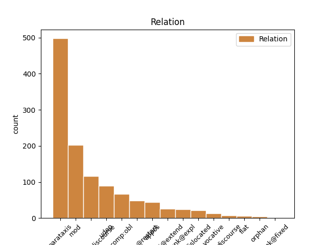
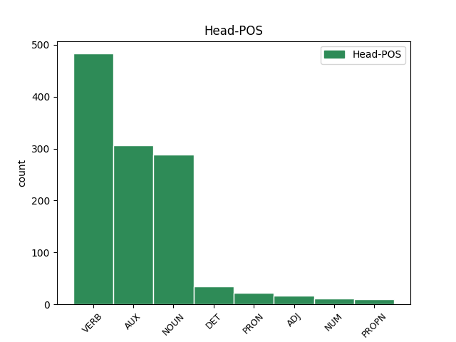
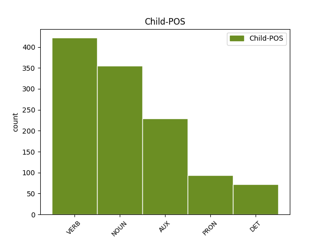

Distribution of features within this leaf



Agreement Rules sorted by frequency.
- When the dependent token is the parataxis(parataxis) of the head token, and the dependent token is VERB.
1 ja _ _ _ _ 0 _ _ _
2 pač _ _ _ _ 0 _ _ _
3 res _ _ _ _ 0 _ _ _
4 je biti VERB Va-r3s-n Mood=Ind|Number=Sing|Person=3|Polarity=Pos|Tense=Pres|VerbForm=Fin 0 _ _ _
5 ful _ _ _ _ 0 _ _ _
6 ji _ _ _ _ 0 _ _ _
7 hitro _ _ _ _ 0 _ _ _
8 pride priti VERB Vmer3s Aspect=Perf|Mood=Ind|Number=Sing|Person=3|Tense=Pres|VerbForm=Fin 4 parataxis _ msd=Ggdste|word=pride
1 reklamo _ _ _ _ 0 _ _ _
2 sem biti AUX Va-r1s-n Mood=Ind|Number=Sing|Person=1|Polarity=Pos|Tense=Pres|VerbForm=Fin 0 _ _ _
3 videla _ _ _ _ 0 _ _ _
4 nisem biti AUX Va-r1s-y Mood=Ind|Number=Sing|Person=1|Polarity=Neg|Tense=Pres|VerbForm=Fin 2 parataxis _ msd=Gp-spe-d|word=nisn
5 pa _ _ _ _ 0 _ _ _
6 še _ _ _ _ 0 _ _ _
7 pila _ _ _ _ 0 _ _ _
1 to _ _ _ _ 0 _ _ _
2 so _ _ _ _ 0 _ _ _
3 pač _ _ _ _ 0 _ _ _
4 eee _ _ _ _ 0 _ _ _
5 kombinacija _ _ _ _ 0 _ _ _
6 in _ _ _ _ 0 _ _ _
7 slalom _ _ _ _ 0 _ _ _
8 in _ _ _ _ 0 _ _ _
9 eee _ _ _ _ 0 _ _ _
10 če _ _ _ _ 0 _ _ _
11 računamo _ _ _ _ 0 _ _ _
12 da _ _ _ _ 0 _ _ _
13 eem _ _ _ _ 0 _ _ _
14 dodaš _ _ _ _ 0 _ _ _
15 še _ _ _ _ 0 _ _ _
16 eno _ _ _ _ 0 _ _ _
17 disciplino _ _ _ _ 0 _ _ _
18 lahko _ _ _ _ 0 _ _ _
19 osvojiš _ _ _ _ 0 _ _ _
20 toliko _ _ _ _ 0 _ _ _
21 točk _ _ _ _ 0 _ _ _
22 kot _ _ _ _ 0 _ _ _
23 jih _ _ _ _ 0 _ _ _
24 je _ _ _ _ 0 _ _ _
25 ona _ _ _ _ 0 _ _ _
26 je _ _ _ _ 0 _ _ _
27 pa _ _ _ _ 0 _ _ _
28 zares _ _ _ _ 0 _ _ _
29 eee _ _ _ _ 0 _ _ _
30 vsestranska _ _ _ _ 0 _ _ _
31 v _ _ _ _ 0 _ _ _
32 formi _ _ _ _ 0 _ _ _
33 od _ _ _ _ 0 _ _ _
34 štarta _ _ _ _ 0 _ _ _
35 do _ _ _ _ 0 _ _ _
36 cilja _ _ _ _ 0 _ _ _
37 od _ _ _ _ 0 _ _ _
38 začetka _ _ _ _ 0 _ _ _
39 sezone _ _ _ _ 0 _ _ _
40 do _ _ _ _ 0 _ _ _
41 konca konec NOUN Ncmsg Case=Gen|Gender=Masc|Number=Sing 0 _ _ _
42 sezone sezona NOUN Ncfsg Case=Gen|Gender=Fem|Number=Sing 41 mod _ msd=Sozer|word=sezone
43 in _ _ _ _ 0 _ _ _
44 imam _ _ _ _ 0 _ _ _
45 same _ _ _ _ 0 _ _ _
46 pohvale _ _ _ _ 0 _ _ _
47 zanjo _ _ _ _ 0 _ _ _
1 samo _ _ _ _ 0 _ _ _
2 je biti AUX Va-r3s-n Mood=Ind|Number=Sing|Person=3|Polarity=Pos|Tense=Pres|VerbForm=Fin 0 _ _ _
3 dobro _ _ _ _ 0 _ _ _
4 veš vedeti VERB Vmpr2s Aspect=Imp|Mood=Ind|Number=Sing|Person=2|Tense=Pres|VerbForm=Fin 2 parataxis@discourse _ msd=Ggnsde|word=veš
1 aha _ _ _ _ 0 _ _ _
2 kul _ _ _ _ 0 _ _ _
3 eee _ _ _ _ 0 _ _ _
4 čakaj _ _ _ _ 0 _ _ _
5 še _ _ _ _ 0 _ _ _
6 kako _ _ _ _ 0 _ _ _
7 vprašanje _ _ _ _ 0 _ _ _
8 eee _ _ _ _ 0 _ _ _
9 to _ _ _ _ 0 _ _ _
10 pa _ _ _ _ 0 _ _ _
11 eee _ _ _ _ 0 _ _ _
12 če _ _ _ _ 0 _ _ _
13 če _ _ _ _ 0 _ _ _
14 nabavim _ _ _ _ 0 _ _ _
15 to _ _ _ _ 0 _ _ _
16 imate _ _ _ _ 0 _ _ _
17 k _ _ _ _ 0 _ _ _
18 [gap] _ _ _ _ 0 _ _ _
19 kako _ _ _ _ 0 _ _ _
20 je _ _ _ _ 0 _ _ _
21 tako _ _ _ _ 0 _ _ _
22 zdaj _ _ _ _ 0 _ _ _
23 ena _ _ _ _ 0 _ _ _
24 cena _ _ _ _ 0 _ _ _
25 za _ _ _ _ 0 _ _ _
26 en _ _ _ _ 0 _ _ _
27 mesec _ _ _ _ 0 _ _ _
28 če _ _ _ _ 0 _ _ _
29 bi _ _ _ _ 0 _ _ _
30 jaz _ _ _ _ 0 _ _ _
31 to _ _ _ _ 0 _ _ _
32 hotel _ _ _ _ 0 _ _ _
33 pač _ _ _ _ 0 _ _ _
34 en _ _ _ _ 0 _ _ _
35 mesec mesec NOUN Ncmsan Animacy=Inan|Case=Acc|Gender=Masc|Number=Sing 36 udep _ msd=Sometn|word=mesec
36 hotel hoteti VERB Vmpp-sm Aspect=Imp|Gender=Masc|Number=Sing|VerbForm=Part 0 _ _ _
37 to _ _ _ _ 0 _ _ _
38 jest _ _ _ _ 0 _ _ _
39 ? _ _ _ _ 0 _ _ _
1 eem _ _ _ _ 0 _ _ _
2 dobro _ _ _ _ 0 _ _ _
3 tekmuje _ _ _ _ 0 _ _ _
4 tudi _ _ _ _ 0 _ _ _
5 v _ _ _ _ 0 _ _ _
6 slalomu _ _ _ _ 0 _ _ _
7 kar _ _ _ _ 0 _ _ _
8 ji on PRON Pp3fsd--y Case=Dat|Gender=Fem|Number=Sing|Person=3|PronType=Prs|Variant=Short 12 comp:obl _ msd=Zotzed--k|word=ji
9 pač _ _ _ _ 0 _ _ _
10 s _ _ _ _ 0 _ _ _
11 tem _ _ _ _ 0 _ _ _
12 omogoča omogočati VERB Vmpr3s Aspect=Imp|Mood=Ind|Number=Sing|Person=3|Tense=Pres|VerbForm=Fin 0 _ _ _
13 da _ _ _ _ 0 _ _ _
14 osvaja _ _ _ _ 0 _ _ _
15 točke _ _ _ _ 0 _ _ _
16 še _ _ _ _ 0 _ _ _
17 v _ _ _ _ 0 _ _ _
18 dveh _ _ _ _ 0 _ _ _
19 drugih _ _ _ _ 0 _ _ _
20 disciplinah _ _ _ _ 0 _ _ _
21 eee _ _ _ _ 0 _ _ _
22 na _ _ _ _ 0 _ _ _
23 najvišjem _ _ _ _ 0 _ _ _
24 nivoju _ _ _ _ 0 _ _ _
1 te _ _ _ _ 0 _ _ _
2 proge proga NOUN Ncfpn Case=Nom|Gender=Fem|Number=Plur 0 _ _ _
3 gor _ _ _ _ 0 _ _ _
4 recimo _ _ _ _ 0 _ _ _
5 eee _ _ _ _ 0 _ _ _
6 sedežnice sedežnica NOUN Ncfpn Case=Nom|Gender=Fem|Number=Plur 2 appos _ msd=Sozmi|word=sedežnice
7 vlečnice _ _ _ _ 0 _ _ _
8 pa _ _ _ _ 0 _ _ _
9 to _ _ _ _ 0 _ _ _
10 vse _ _ _ _ 0 _ _ _
11 je _ _ _ _ 0 _ _ _
12 recimo _ _ _ _ 0 _ _ _
13 šest _ _ _ _ 0 _ _ _
14 petnajst _ _ _ _ 0 _ _ _
15 trinajst _ _ _ _ 0 _ _ _
16 in _ _ _ _ 0 _ _ _
17 ob _ _ _ _ 0 _ _ _
18 in _ _ _ _ 0 _ _ _
19 proga _ _ _ _ 0 _ _ _
20 je _ _ _ _ 0 _ _ _
21 recimo _ _ _ _ 0 _ _ _
22 rdeča _ _ _ _ 0 _ _ _
23 narisana _ _ _ _ 0 _ _ _
24 pač _ _ _ _ 0 _ _ _
25 rdeča _ _ _ _ 0 _ _ _
26 srednje _ _ _ _ 0 _ _ _
27 težka _ _ _ _ 0 _ _ _
28 ali _ _ _ _ 0 _ _ _
29 pa _ _ _ _ 0 _ _ _
30 modra _ _ _ _ 0 _ _ _
31 pa _ _ _ _ 0 _ _ _
32 je _ _ _ _ 0 _ _ _
33 številka _ _ _ _ 0 _ _ _
34 sedem _ _ _ _ 0 _ _ _
35 ali _ _ _ _ 0 _ _ _
36 pa _ _ _ _ 0 _ _ _
37 ta _ _ _ _ 0 _ _ _
38 je _ _ _ _ 0 _ _ _
39 devet _ _ _ _ 0 _ _ _
40 ali _ _ _ _ 0 _ _ _
41 pa _ _ _ _ 0 _ _ _
42 ne _ _ _ _ 0 _ _ _
43 vem _ _ _ _ 0 _ _ _
44 koliko _ _ _ _ 0 _ _ _
1 aha _ _ _ _ 0 _ _ _
2 kul _ _ _ _ 0 _ _ _
3 eee _ _ _ _ 0 _ _ _
4 čakaj čakati VERB Vmpm2s Aspect=Imp|Mood=Imp|Number=Sing|Person=2|VerbForm=Fin 0 _ _ _
5 še _ _ _ _ 0 _ _ _
6 kako _ _ _ _ 0 _ _ _
7 vprašanje vprašanje NOUN Ncnsn Case=Nom|Gender=Neut|Number=Sing 4 parataxis _ msd=Sosei|word=vprašanje
8 eee _ _ _ _ 0 _ _ _
9 to _ _ _ _ 0 _ _ _
10 pa _ _ _ _ 0 _ _ _
11 eee _ _ _ _ 0 _ _ _
12 če _ _ _ _ 0 _ _ _
13 če _ _ _ _ 0 _ _ _
14 nabavim _ _ _ _ 0 _ _ _
15 to _ _ _ _ 0 _ _ _
16 imate _ _ _ _ 0 _ _ _
17 k _ _ _ _ 0 _ _ _
18 [gap] _ _ _ _ 0 _ _ _
19 kako _ _ _ _ 0 _ _ _
20 je _ _ _ _ 0 _ _ _
21 tako _ _ _ _ 0 _ _ _
22 zdaj _ _ _ _ 0 _ _ _
23 ena _ _ _ _ 0 _ _ _
24 cena _ _ _ _ 0 _ _ _
25 za _ _ _ _ 0 _ _ _
26 en _ _ _ _ 0 _ _ _
27 mesec _ _ _ _ 0 _ _ _
28 če _ _ _ _ 0 _ _ _
29 bi _ _ _ _ 0 _ _ _
30 jaz _ _ _ _ 0 _ _ _
31 to _ _ _ _ 0 _ _ _
32 hotel _ _ _ _ 0 _ _ _
33 pač _ _ _ _ 0 _ _ _
34 en _ _ _ _ 0 _ _ _
35 mesec _ _ _ _ 0 _ _ _
36 hotel _ _ _ _ 0 _ _ _
37 to _ _ _ _ 0 _ _ _
38 jest _ _ _ _ 0 _ _ _
39 ? _ _ _ _ 0 _ _ _
1 aha _ _ _ _ 0 _ _ _
2 kul _ _ _ _ 0 _ _ _
3 eee _ _ _ _ 0 _ _ _
4 čakaj čakati VERB Vmpm2s Aspect=Imp|Mood=Imp|Number=Sing|Person=2|VerbForm=Fin 0 _ _ _
5 še _ _ _ _ 0 _ _ _
6 kako _ _ _ _ 0 _ _ _
7 vprašanje _ _ _ _ 0 _ _ _
8 eee _ _ _ _ 0 _ _ _
9 to _ _ _ _ 0 _ _ _
10 pa _ _ _ _ 0 _ _ _
11 eee _ _ _ _ 0 _ _ _
12 če _ _ _ _ 0 _ _ _
13 če _ _ _ _ 0 _ _ _
14 nabavim _ _ _ _ 0 _ _ _
15 to _ _ _ _ 0 _ _ _
16 imate _ _ _ _ 0 _ _ _
17 k _ _ _ _ 0 _ _ _
18 [gap] _ _ _ _ 0 _ _ _
19 kako _ _ _ _ 0 _ _ _
20 je biti VERB Va-r3s-n Mood=Ind|Number=Sing|Person=3|Polarity=Pos|Tense=Pres|VerbForm=Fin 4 parataxis@restart _ msd=Gp-ste-n|word=je
21 tako _ _ _ _ 0 _ _ _
22 zdaj _ _ _ _ 0 _ _ _
23 ena _ _ _ _ 0 _ _ _
24 cena _ _ _ _ 0 _ _ _
25 za _ _ _ _ 0 _ _ _
26 en _ _ _ _ 0 _ _ _
27 mesec _ _ _ _ 0 _ _ _
28 če _ _ _ _ 0 _ _ _
29 bi _ _ _ _ 0 _ _ _
30 jaz _ _ _ _ 0 _ _ _
31 to _ _ _ _ 0 _ _ _
32 hotel _ _ _ _ 0 _ _ _
33 pač _ _ _ _ 0 _ _ _
34 en _ _ _ _ 0 _ _ _
35 mesec _ _ _ _ 0 _ _ _
36 hotel _ _ _ _ 0 _ _ _
37 to _ _ _ _ 0 _ _ _
38 jest _ _ _ _ 0 _ _ _
39 ? _ _ _ _ 0 _ _ _
1 jaz _ _ _ _ 0 _ _ _
2 sem biti AUX Va-r1s-n Mood=Ind|Number=Sing|Person=1|Polarity=Pos|Tense=Pres|VerbForm=Fin 0 _ _ _
3 pa _ _ _ _ 0 _ _ _
4 to ta DET Pd-nsa Case=Acc|Gender=Neut|Number=Sing|PronType=Dem 2 unk@expl _ msd=Zk-set|word=to
5 že _ _ _ _ 0 _ _ _
6 zjutraj _ _ _ _ 0 _ _ _
7 o _ _ _ _ 0 _ _ _
8 tem _ _ _ _ 0 _ _ _
9 razglabljal _ _ _ _ 0 _ _ _
10 ne _ _ _ _ 0 _ _ _
1 te _ _ _ _ 0 _ _ _
2 proge _ _ _ _ 0 _ _ _
3 gor _ _ _ _ 0 _ _ _
4 recimo _ _ _ _ 0 _ _ _
5 eee _ _ _ _ 0 _ _ _
6 sedežnice _ _ _ _ 0 _ _ _
7 vlečnice _ _ _ _ 0 _ _ _
8 pa _ _ _ _ 0 _ _ _
9 to ta DET Pd-nsn Case=Nom|Gender=Neut|Number=Sing|PronType=Dem 0 _ _ _
10 vse ves DET Pg-nsn Case=Nom|Gender=Neut|Number=Sing|PronType=Tot 9 mod _ msd=Zc-sei|word=vse
11 je _ _ _ _ 0 _ _ _
12 recimo _ _ _ _ 0 _ _ _
13 šest _ _ _ _ 0 _ _ _
14 petnajst _ _ _ _ 0 _ _ _
15 trinajst _ _ _ _ 0 _ _ _
16 in _ _ _ _ 0 _ _ _
17 ob _ _ _ _ 0 _ _ _
18 in _ _ _ _ 0 _ _ _
19 proga _ _ _ _ 0 _ _ _
20 je _ _ _ _ 0 _ _ _
21 recimo _ _ _ _ 0 _ _ _
22 rdeča _ _ _ _ 0 _ _ _
23 narisana _ _ _ _ 0 _ _ _
24 pač _ _ _ _ 0 _ _ _
25 rdeča _ _ _ _ 0 _ _ _
26 srednje _ _ _ _ 0 _ _ _
27 težka _ _ _ _ 0 _ _ _
28 ali _ _ _ _ 0 _ _ _
29 pa _ _ _ _ 0 _ _ _
30 modra _ _ _ _ 0 _ _ _
31 pa _ _ _ _ 0 _ _ _
32 je _ _ _ _ 0 _ _ _
33 številka _ _ _ _ 0 _ _ _
34 sedem _ _ _ _ 0 _ _ _
35 ali _ _ _ _ 0 _ _ _
36 pa _ _ _ _ 0 _ _ _
37 ta _ _ _ _ 0 _ _ _
38 je _ _ _ _ 0 _ _ _
39 devet _ _ _ _ 0 _ _ _
40 ali _ _ _ _ 0 _ _ _
41 pa _ _ _ _ 0 _ _ _
42 ne _ _ _ _ 0 _ _ _
43 vem _ _ _ _ 0 _ _ _
44 koliko _ _ _ _ 0 _ _ _
1 eem _ _ _ _ 0 _ _ _
2 dobro _ _ _ _ 0 _ _ _
3 tekmuje tekmovati VERB Vmpr3s Aspect=Imp|Mood=Ind|Number=Sing|Person=3|Tense=Pres|VerbForm=Fin 0 _ _ _
4 tudi _ _ _ _ 0 _ _ _
5 v _ _ _ _ 0 _ _ _
6 slalomu _ _ _ _ 0 _ _ _
7 kar _ _ _ _ 0 _ _ _
8 ji _ _ _ _ 0 _ _ _
9 pač _ _ _ _ 0 _ _ _
10 s _ _ _ _ 0 _ _ _
11 tem _ _ _ _ 0 _ _ _
12 omogoča omogočati VERB Vmpr3s Aspect=Imp|Mood=Ind|Number=Sing|Person=3|Tense=Pres|VerbForm=Fin 3 mod _ msd=Ggnste|word=omogoča
13 da _ _ _ _ 0 _ _ _
14 osvaja _ _ _ _ 0 _ _ _
15 točke _ _ _ _ 0 _ _ _
16 še _ _ _ _ 0 _ _ _
17 v _ _ _ _ 0 _ _ _
18 dveh _ _ _ _ 0 _ _ _
19 drugih _ _ _ _ 0 _ _ _
20 disciplinah _ _ _ _ 0 _ _ _
21 eee _ _ _ _ 0 _ _ _
22 na _ _ _ _ 0 _ _ _
23 najvišjem _ _ _ _ 0 _ _ _
24 nivoju _ _ _ _ 0 _ _ _
1 eee _ _ _ _ 0 _ _ _
2 ali _ _ _ _ 0 _ _ _
3 ni biti VERB Va-r3s-y Mood=Ind|Number=Sing|Person=3|Polarity=Neg|Tense=Pres|VerbForm=Fin 0 _ _ _
4 [:voice] _ _ _ _ 0 _ _ _
5 … _ _ _ _ 0 _ _ _
6 ne _ _ _ _ 0 _ _ _
7 vem _ _ _ _ 0 _ _ _
8 v _ _ _ _ 0 _ _ _
9 čemu _ _ _ _ 0 _ _ _
10 ali _ _ _ _ 0 _ _ _
11 [name:personal] _ _ _ _ 0 _ _ _
12 [name:personal] _ _ _ _ 0 _ _ _
13 eee _ _ _ _ 0 _ _ _
14 dajmo _ _ _ _ 0 _ _ _
15 glej _ _ _ _ 0 _ _ _
16 eee _ _ _ _ 0 _ _ _
17 ali _ _ _ _ 0 _ _ _
18 ni _ _ _ _ 0 _ _ _
19 a _ _ _ _ 0 _ _ _
20 ni biti AUX Va-r3s-y Mood=Ind|Number=Sing|Person=3|Polarity=Neg|Tense=Pres|VerbForm=Fin 3 parataxis@restart _ msd=Gp-ste-d|word=ni
21 to _ _ _ _ 0 _ _ _
22 žaljivo _ _ _ _ 0 _ _ _
23 do _ _ _ _ 0 _ _ _
24 lepote _ _ _ _ 0 _ _ _
25 ene _ _ _ _ 0 _ _ _
26 ene _ _ _ _ 0 _ _ _
27 ene _ _ _ _ 0 _ _ _
28 ene _ _ _ _ 0 _ _ _
29 [incident] _ _ _ _ 0 _ _ _
30 čke _ _ _ _ 0 _ _ _
31 recimo _ _ _ _ 0 _ _ _
32 eee _ _ _ _ 0 _ _ _
33 glej _ _ _ _ 0 _ _ _
34 kot _ _ _ _ 0 _ _ _
35 a _ _ _ _ 0 _ _ _
36 je _ _ _ _ 0 _ _ _
37 to _ _ _ _ 0 _ _ _
38 [incident] _ _ _ _ 0 _ _ _
39 čka _ _ _ _ 0 _ _ _
40 kot _ _ _ _ 0 _ _ _
41 oseba _ _ _ _ 0 _ _ _
42 ženskega _ _ _ _ 0 _ _ _
43 spola _ _ _ _ 0 _ _ _
44 ali _ _ _ _ 0 _ _ _
45 je _ _ _ _ 0 _ _ _
46 [incident] _ _ _ _ 0 _ _ _
47 čka _ _ _ _ 0 _ _ _
48 kot _ _ _ _ 0 _ _ _
49 spolni _ _ _ _ 0 _ _ _
50 organ _ _ _ _ 0 _ _ _
51 a _ _ _ _ 0 _ _ _
52 veš _ _ _ _ 0 _ _ _
53 to _ _ _ _ 0 _ _ _
54 je _ _ _ _ 0 _ _ _
55 mislim _ _ _ _ 0 _ _ _
56 ne _ _ _ _ 0 _ _ _
57 u _ _ _ _ 0 _ _ _
58 [gap] _ _ _ _ 0 _ _ _
59 u _ _ _ _ 0 _ _ _
60 [gap] _ _ _ _ 0 _ _ _
61 … _ _ _ _ 0 _ _ _
62 tudi _ _ _ _ 0 _ _ _
1 dobro _ _ _ _ 0 _ _ _
2 saj _ _ _ _ 0 _ _ _
3 zdaj _ _ _ _ 0 _ _ _
4 vznožje vznožje NOUN Ncnsg Case=Gen|Gender=Neut|Number=Sing 17 dislocated _ msd=Soser|word=vznožja
5 ali _ _ _ _ 0 _ _ _
6 če _ _ _ _ 0 _ _ _
7 je _ _ _ _ 0 _ _ _
8 to _ _ _ _ 0 _ _ _
9 dvesto _ _ _ _ 0 _ _ _
10 tristo _ _ _ _ 0 _ _ _
11 petsto _ _ _ _ 0 _ _ _
12 metrov _ _ _ _ 0 _ _ _
13 nadmorske _ _ _ _ 0 _ _ _
14 višine _ _ _ _ 0 _ _ _
15 to _ _ _ _ 0 _ _ _
16 ne _ _ _ _ 0 _ _ _
17 bo biti AUX Va-f3s-n Mood=Ind|Number=Sing|Person=3|Polarity=Pos|Tense=Fut|VerbForm=Fin 0 _ _ _
18 šel _ _ _ _ 0 _ _ _
19 zdaj _ _ _ _ 0 _ _ _
20 nobeden _ _ _ _ 0 _ _ _
21 preverjat _ _ _ _ 0 _ _ _
22 [audience:laughter] _ _ _ _ 0 _ _ _
23 v _ _ _ _ 0 _ _ _
24 naših _ _ _ _ 0 _ _ _
25 koncih _ _ _ _ 0 _ _ _
26 ne _ _ _ _ 0 _ _ _
1 hvala _ _ _ _ 0 _ _ _
2 lepa _ _ _ _ 0 _ _ _
3 gospod _ _ _ _ 0 _ _ _
4 [name:surname] _ _ _ _ 0 _ _ _
5 replika replika NOUN Ncfsn Case=Nom|Gender=Fem|Number=Sing 0 _ _ _
6 [incident] _ _ _ _ 0 _ _ _
7 gospod gospod NOUN Ncmsn Case=Nom|Gender=Masc|Number=Sing 5 vocative _ msd=Somei|word=gospod
8 [name:surname] _ _ _ _ 0 _ _ _
1 pa _ _ _ _ 0 _ _ _
2 to _ _ _ _ 0 _ _ _
3 za _ _ _ _ 0 _ _ _
4 vaju _ _ _ _ 0 _ _ _
5 dva _ _ _ _ 0 _ _ _
6 tudi _ _ _ _ 0 _ _ _
7 pa _ _ _ _ 0 _ _ _
8 što _ _ _ _ 0 _ _ _
9 tako _ _ _ _ 0 _ _ _
10 koga _ _ _ _ 0 _ _ _
11 po _ _ _ _ 0 _ _ _
12 [gap] _ _ _ _ 0 _ _ _
13 eee _ _ _ _ 0 _ _ _
14 me _ _ _ _ 0 _ _ _
15 pozna poznati VERB Vmpr3s Aspect=Imp|Mood=Ind|Number=Sing|Person=3|Tense=Pres|VerbForm=Fin 0 _ _ _
16 pa _ _ _ _ 0 _ _ _
17 to ta DET Pd-nsn Case=Nom|Gender=Neut|Number=Sing|PronType=Dem 15 conj@extend _ msd=Zk-sei|word=to
1 pa _ _ _ _ 0 _ _ _
2 razrešiti _ _ _ _ 0 _ _ _
3 te _ _ _ _ 0 _ _ _
4 probleme _ _ _ _ 0 _ _ _
5 in _ _ _ _ 0 _ _ _
6 najti _ _ _ _ 0 _ _ _
7 vzrok vzrok NOUN Ncmsan Animacy=Inan|Case=Acc|Gender=Masc|Number=Sing 0 _ _ _
8 zakaj _ _ _ _ 0 _ _ _
9 je biti AUX Va-r3s-n Mood=Ind|Number=Sing|Person=3|Polarity=Pos|Tense=Pres|VerbForm=Fin 7 mod _ msd=Gp-ste-n|word=je
10 do _ _ _ _ 0 _ _ _
11 teh _ _ _ _ 0 _ _ _
12 problemov _ _ _ _ 0 _ _ _
13 prišli _ _ _ _ 0 _ _ _
14 prišlo _ _ _ _ 0 _ _ _
15 in _ _ _ _ 0 _ _ _
16 na _ _ _ _ 0 _ _ _
17 ta _ _ _ _ 0 _ _ _
18 način _ _ _ _ 0 _ _ _
19 poskušati _ _ _ _ 0 _ _ _
20 se _ _ _ _ 0 _ _ _
21 z _ _ _ _ 0 _ _ _
22 njim _ _ _ _ 0 _ _ _
23 pogovoriti _ _ _ _ 0 _ _ _
24 kako _ _ _ _ 0 _ _ _
25 in _ _ _ _ 0 _ _ _
26 na _ _ _ _ 0 _ _ _
27 kakšen _ _ _ _ 0 _ _ _
28 način _ _ _ _ 0 _ _ _
29 lahko _ _ _ _ 0 _ _ _
30 ta _ _ _ _ 0 _ _ _
31 problem _ _ _ _ 0 _ _ _
32 ki _ _ _ _ 0 _ _ _
33 je _ _ _ _ 0 _ _ _
34 očitno _ _ _ _ 0 _ _ _
35 postal _ _ _ _ 0 _ _ _
36 tudi _ _ _ _ 0 _ _ _
37 politični _ _ _ _ 0 _ _ _
38 problem _ _ _ _ 0 _ _ _
39 in _ _ _ _ 0 _ _ _
40 gospodarski _ _ _ _ 0 _ _ _
41 problem _ _ _ _ 0 _ _ _
42 rešijo _ _ _ _ 0 _ _ _
1 v _ _ _ _ 0 _ _ _
2 posočju _ _ _ _ 0 _ _ _
3 očitno _ _ _ _ 0 _ _ _
4 običaj običaj NOUN Ncmsn Case=Nom|Gender=Masc|Number=Sing 0 _ _ _
5 da _ _ _ _ 0 _ _ _
6 najprej _ _ _ _ 0 _ _ _
7 naj _ _ _ _ 0 _ _ _
8 teče _ _ _ _ 0 _ _ _
9 kri _ _ _ _ 0 _ _ _
10 potem _ _ _ _ 0 _ _ _
11 bomo _ _ _ _ 0 _ _ _
12 pa _ _ _ _ 0 _ _ _
13 videli _ _ _ _ 0 _ _ _
14 če _ _ _ _ 0 _ _ _
15 bomo _ _ _ _ 0 _ _ _
16 kaj _ _ _ _ 0 _ _ _
17 naredili _ _ _ _ 0 _ _ _
18 najrajši _ _ _ _ 0 _ _ _
19 tudi _ _ _ _ 0 _ _ _
20 takrat _ _ _ _ 0 _ _ _
21 nič nič DET Pz-nsn Case=Nom|Gender=Neut|Number=Sing|PronType=Neg 4 parataxis _ msd=Zl-sei|word=nič
1 ne _ _ _ _ 0 _ _ _
2 mi jaz PRON Pp1-sd--y Case=Dat|Number=Sing|Person=1|PronType=Prs|Variant=Short 3 unk@expl _ msd=Zop-ed--k|word=mi
3 je biti AUX Va-r3s-n Mood=Ind|Number=Sing|Person=3|Polarity=Pos|Tense=Pres|VerbForm=Fin 0 _ _ _
4 b _ _ _ _ 0 _ _ _
5 [gap] _ _ _ _ 0 _ _ _
6 začel _ _ _ _ 0 _ _ _
7 boteke _ _ _ _ 0 _ _ _
8 gnati _ _ _ _ 0 _ _ _
9 ven _ _ _ _ 0 _ _ _
1 znaš _ _ _ _ 0 _ _ _
2 to ta DET Pd-nsn Case=Nom|Gender=Neut|Number=Sing|PronType=Dem 4 dislocated _ msd=Zk-sei|word=to
3 ne _ _ _ _ 0 _ _ _
4 vem vedeti VERB Vmpr1s Aspect=Imp|Mood=Ind|Number=Sing|Person=1|Tense=Pres|VerbForm=Fin 0 _ _ _
5 kako _ _ _ _ 0 _ _ _
6 bo _ _ _ _ 0 _ _ _
7 to _ _ _ _ 0 _ _ _
8 raslo _ _ _ _ 0 _ _ _
1 vaš _ _ _ _ 0 _ _ _
2 komentar komentar NOUN Ncmsn Case=Nom|Gender=Masc|Number=Sing 0 _ _ _
3 kaj _ _ _ _ 0 _ _ _
4 pravzaprav _ _ _ _ 0 _ _ _
5 vi _ _ _ _ 0 _ _ _
6 eee _ _ _ _ 0 _ _ _
7 o _ _ _ _ 0 _ _ _
8 tem _ _ _ _ 0 _ _ _
9 mmm _ _ _ _ 0 _ _ _
10 menite _ _ _ _ 0 _ _ _
11 kako _ _ _ _ 0 _ _ _
12 ste _ _ _ _ 0 _ _ _
13 videli _ _ _ _ 0 _ _ _
14 nebesedno _ _ _ _ 0 _ _ _
15 k _ _ _ _ 0 _ _ _
16 [gap] _ _ _ _ 0 _ _ _
17 komunikacijo _ _ _ _ 0 _ _ _
18 ste _ _ _ _ 0 _ _ _
19 pozorni _ _ _ _ 0 _ _ _
20 na _ _ _ _ 0 _ _ _
21 eem _ _ _ _ 0 _ _ _
22 govorce _ _ _ _ 0 _ _ _
23 pet _ _ _ _ 0 _ _ _
24 jih _ _ _ _ 0 _ _ _
25 je _ _ _ _ 0 _ _ _
26 bilo _ _ _ _ 0 _ _ _
27 kdo kdo PRON Pq-msn Case=Nom|Gender=Masc|Number=Sing|PronType=Int 2 parataxis _ msd=Zv-mei|word=kdo
28 kako _ _ _ _ 0 _ _ _
1 to _ _ _ _ 0 _ _ _
2 so _ _ _ _ 0 _ _ _
3 pač _ _ _ _ 0 _ _ _
4 eee _ _ _ _ 0 _ _ _
5 kombinacija _ _ _ _ 0 _ _ _
6 in _ _ _ _ 0 _ _ _
7 slalom _ _ _ _ 0 _ _ _
8 in _ _ _ _ 0 _ _ _
9 eee _ _ _ _ 0 _ _ _
10 če _ _ _ _ 0 _ _ _
11 računamo _ _ _ _ 0 _ _ _
12 da _ _ _ _ 0 _ _ _
13 eem _ _ _ _ 0 _ _ _
14 dodaš _ _ _ _ 0 _ _ _
15 še _ _ _ _ 0 _ _ _
16 eno _ _ _ _ 0 _ _ _
17 disciplino _ _ _ _ 0 _ _ _
18 lahko _ _ _ _ 0 _ _ _
19 osvojiš _ _ _ _ 0 _ _ _
20 toliko _ _ _ _ 0 _ _ _
21 točk _ _ _ _ 0 _ _ _
22 kot _ _ _ _ 0 _ _ _
23 jih _ _ _ _ 0 _ _ _
24 je _ _ _ _ 0 _ _ _
25 ona _ _ _ _ 0 _ _ _
26 je _ _ _ _ 0 _ _ _
27 pa _ _ _ _ 0 _ _ _
28 zares _ _ _ _ 0 _ _ _
29 eee _ _ _ _ 0 _ _ _
30 vsestranska _ _ _ _ 0 _ _ _
31 v _ _ _ _ 0 _ _ _
32 formi _ _ _ _ 0 _ _ _
33 od _ _ _ _ 0 _ _ _
34 štarta _ _ _ _ 0 _ _ _
35 do _ _ _ _ 0 _ _ _
36 cilja _ _ _ _ 0 _ _ _
37 od _ _ _ _ 0 _ _ _
38 začetka _ _ _ _ 0 _ _ _
39 sezone _ _ _ _ 0 _ _ _
40 do _ _ _ _ 0 _ _ _
41 konca _ _ _ _ 0 _ _ _
42 sezone _ _ _ _ 0 _ _ _
43 in _ _ _ _ 0 _ _ _
44 imam imeti VERB Vmpr1s-n Aspect=Imp|Mood=Ind|Number=Sing|Person=1|Polarity=Pos|Tense=Pres|VerbForm=Fin 0 _ _ _
45 same _ _ _ _ 0 _ _ _
46 pohvale _ _ _ _ 0 _ _ _
47 zanjo zame PRON Pp3fsa--b Case=Acc|Gender=Fem|Number=Sing|Person=3|PronType=Prs|Variant=Bound 44 udep _ msd=Zotzet--z|word=zanjo
1 [gap] _ _ _ _ 0 _ _ _
2 kaj kaj PRON Pq-nsn Case=Nom|Gender=Neut|Number=Sing|PronType=Int 5 discourse _ msd=Zv-sei|word=kaj
3 a _ _ _ _ 0 _ _ _
4 tule _ _ _ _ 0 _ _ _
5 boš biti AUX Va-f2s-n Mood=Ind|Number=Sing|Person=2|Polarity=Pos|Tense=Fut|VerbForm=Fin 0 _ _ _
6 diplomirala _ _ _ _ 0 _ _ _
7 pol _ _ _ _ 0 _ _ _
8 boš _ _ _ _ 0 _ _ _
9 šla _ _ _ _ 0 _ _ _
10 pa _ _ _ _ 0 _ _ _
11 ven _ _ _ _ 0 _ _ _
12 magisterij _ _ _ _ 0 _ _ _
13 delat _ _ _ _ 0 _ _ _
14 ? _ _ _ _ 0 _ _ _
1 pardon pardon NOUN Ncmsn Case=Nom|Gender=Masc|Number=Sing 4 discourse _ msd=Somei|word=pardon
2 se _ _ _ _ 0 _ _ _
3 ne _ _ _ _ 0 _ _ _
4 bom biti VERB Va-f1s-n Mood=Ind|Number=Sing|Person=1|Polarity=Pos|Tense=Fut|VerbForm=Fin 0 _ _ _
5 več _ _ _ _ 0 _ _ _
6 [gap] _ _ _ _ 0 _ _ _
7 ja _ _ _ _ 0 _ _ _
8 ma _ _ _ _ 0 _ _ _
9 to _ _ _ _ 0 _ _ _
10 je _ _ _ _ 0 _ _ _
11 bilo _ _ _ _ 0 _ _ _
12 brez _ _ _ _ 0 _ _ _
13 veze _ _ _ _ 0 _ _ _
14 je _ _ _ _ 0 _ _ _
15 bilo _ _ _ _ 0 _ _ _
16 brez _ _ _ _ 0 _ _ _
17 veze _ _ _ _ 0 _ _ _
18 brez _ _ _ _ 0 _ _ _
19 veze _ _ _ _ 0 _ _ _
20 danes _ _ _ _ 0 _ _ _
21 saj _ _ _ _ 0 _ _ _
22 tudi _ _ _ _ 0 _ _ _
23 duhovita _ _ _ _ 0 _ _ _
24 se _ _ _ _ 0 _ _ _
25 mi _ _ _ _ 0 _ _ _
26 ne _ _ _ _ 0 _ _ _
27 zdi _ _ _ _ 0 _ _ _
28 ampak _ _ _ _ 0 _ _ _
29 je _ _ _ _ 0 _ _ _
30 ima _ _ _ _ 0 _ _ _
31 pa _ _ _ _ 0 _ _ _
32 neke _ _ _ _ 0 _ _ _
33 analogije _ _ _ _ 0 _ _ _
34 to _ _ _ _ 0 _ _ _
35 pa _ _ _ _ 0 _ _ _
36 so _ _ _ _ 0 _ _ _
1 to _ _ _ _ 0 _ _ _
2 pa _ _ _ _ 0 _ _ _
3 ne _ _ _ _ 0 _ _ _
4 bo _ _ _ _ 0 _ _ _
5 šlo _ _ _ _ 0 _ _ _
6 mi _ _ _ _ 0 _ _ _
7 zdaj _ _ _ _ 0 _ _ _
8 govorimo _ _ _ _ 0 _ _ _
9 o _ _ _ _ 0 _ _ _
10 kroženju kroženje NOUN Ncnsl Case=Loc|Gender=Neut|Number=Sing 0 _ _ _
11 česa kaj PRON Pq-nsg Case=Gen|Gender=Neut|Number=Sing|PronType=Int 10 mod _ msd=Zv-ser|word=česa
12 ? _ _ _ _ 0 _ _ _
1 [speaker:laughter] _ _ _ _ 0 _ _ _
2 kaj _ _ _ _ 0 _ _ _
3 ga _ _ _ _ 0 _ _ _
4 še _ _ _ _ 0 _ _ _
5 kar _ _ _ _ 0 _ _ _
6 geekaš geekati VERB Vmpr2s Aspect=Imp|Mood=Ind|Number=Sing|Person=2|Tense=Pres|VerbForm=Fin 0 _ _ _
7 ali _ _ _ _ 0 _ _ _
8 kaj kaj PRON Pq-nsn Case=Nom|Gender=Neut|Number=Sing|PronType=Int 6 conj@extend _ msd=Zv-sei|word=ka
9 ? _ _ _ _ 0 _ _ _
1 te _ _ _ _ 0 _ _ _
2 proge _ _ _ _ 0 _ _ _
3 gor _ _ _ _ 0 _ _ _
4 recimo _ _ _ _ 0 _ _ _
5 eee _ _ _ _ 0 _ _ _
6 sedežnice _ _ _ _ 0 _ _ _
7 vlečnice _ _ _ _ 0 _ _ _
8 pa _ _ _ _ 0 _ _ _
9 to _ _ _ _ 0 _ _ _
10 vse _ _ _ _ 0 _ _ _
11 je _ _ _ _ 0 _ _ _
12 recimo _ _ _ _ 0 _ _ _
13 šest _ _ _ _ 0 _ _ _
14 petnajst _ _ _ _ 0 _ _ _
15 trinajst _ _ _ _ 0 _ _ _
16 in _ _ _ _ 0 _ _ _
17 ob _ _ _ _ 0 _ _ _
18 in _ _ _ _ 0 _ _ _
19 proga _ _ _ _ 0 _ _ _
20 je _ _ _ _ 0 _ _ _
21 recimo _ _ _ _ 0 _ _ _
22 rdeča _ _ _ _ 0 _ _ _
23 narisana _ _ _ _ 0 _ _ _
24 pač _ _ _ _ 0 _ _ _
25 rdeča _ _ _ _ 0 _ _ _
26 srednje _ _ _ _ 0 _ _ _
27 težka _ _ _ _ 0 _ _ _
28 ali _ _ _ _ 0 _ _ _
29 pa _ _ _ _ 0 _ _ _
30 modra _ _ _ _ 0 _ _ _
31 pa _ _ _ _ 0 _ _ _
32 je _ _ _ _ 0 _ _ _
33 številka številka NOUN Ncfsn Case=Nom|Gender=Fem|Number=Sing 0 _ _ _
34 sedem _ _ _ _ 0 _ _ _
35 ali _ _ _ _ 0 _ _ _
36 pa _ _ _ _ 0 _ _ _
37 ta _ _ _ _ 0 _ _ _
38 je _ _ _ _ 0 _ _ _
39 devet _ _ _ _ 0 _ _ _
40 ali _ _ _ _ 0 _ _ _
41 pa _ _ _ _ 0 _ _ _
42 ne _ _ _ _ 0 _ _ _
43 vem vedeti VERB Vmpr1s Aspect=Imp|Mood=Ind|Number=Sing|Person=1|Tense=Pres|VerbForm=Fin 33 conj@extend _ msd=Ggnspe|word=vem
44 koliko _ _ _ _ 0 _ _ _
1 kaj _ _ _ _ 0 _ _ _
2 te _ _ _ _ 0 _ _ _
3 zdaj _ _ _ _ 0 _ _ _
4 če _ _ _ _ 0 _ _ _
5 pride _ _ _ _ 0 _ _ _
6 en _ _ _ _ 0 _ _ _
7 oni _ _ _ _ 0 _ _ _
8 eee _ _ _ _ 0 _ _ _
9 vlomilec _ _ _ _ 0 _ _ _
10 ne _ _ _ _ 0 _ _ _
11 bo _ _ _ _ 0 _ _ _
12 videl _ _ _ _ 0 _ _ _
13 vse ves DET Pg-nsa Case=Acc|Gender=Neut|Number=Sing|PronType=Tot 0 _ _ _
14 vse ves DET Pg-nsa Case=Acc|Gender=Neut|Number=Sing|PronType=Tot 13 appos _ msd=Zc-set|word=vse
15 kaj _ _ _ _ 0 _ _ _
16 imamo _ _ _ _ 0 _ _ _
17 kje _ _ _ _ 0 _ _ _
1 eee _ _ _ _ 0 _ _ _
2 ti ti PRON Pp2-sn Case=Nom|Number=Sing|Person=2|PronType=Prs 4 vocative _ msd=Zod-ei|word=ti
3 in _ _ _ _ 0 _ _ _
4 jaz jaz PRON Pp1-sn Case=Nom|Number=Sing|Person=1|PronType=Prs 0 _ _ _
5 čisto _ _ _ _ 0 _ _ _
6 v _ _ _ _ 0 _ _ _
7 dobri _ _ _ _ 0 _ _ _
8 veri _ _ _ _ 0 _ _ _
9 dajta _ _ _ _ 0 _ _ _
10 mi _ _ _ _ 0 _ _ _
11 malo _ _ _ _ 0 _ _ _
12 za _ _ _ _ 0 _ _ _
13 piti _ _ _ _ 0 _ _ _
14 a _ _ _ _ 0 _ _ _
15 veš _ _ _ _ 0 _ _ _
16 pa _ _ _ _ 0 _ _ _
17 me _ _ _ _ 0 _ _ _
18 zebe _ _ _ _ 0 _ _ _
19 sem _ _ _ _ 0 _ _ _
20 šla _ _ _ _ 0 _ _ _
21 se _ _ _ _ 0 _ _ _
22 obleči _ _ _ _ 0 _ _ _
23 in _ _ _ _ 0 _ _ _
24 kostanj _ _ _ _ 0 _ _ _
25 lepo _ _ _ _ 0 _ _ _
26 lupimo _ _ _ _ 0 _ _ _
27 tam _ _ _ _ 0 _ _ _
28 k _ _ _ _ 0 _ _ _
29 eee _ _ _ _ 0 _ _ _
30 [name:personal] _ _ _ _ 0 _ _ _
31 ga _ _ _ _ 0 _ _ _
32 pa _ _ _ _ 0 _ _ _
33 peče _ _ _ _ 0 _ _ _
1 [:voice] _ _ _ _ 0 _ _ _
2 ja _ _ _ _ 0 _ _ _
3 hvala hvala NOUN Ncfsn Case=Nom|Gender=Fem|Number=Sing 0 _ _ _
4 bogu bog NOUN Ncmsd Case=Dat|Gender=Masc|Number=Sing 3 unk@fixed _ msd=Somed|word=bogi
5 enkrat _ _ _ _ 0 _ _ _
6 po _ _ _ _ 0 _ _ _
7 dolgem _ _ _ _ 0 _ _ _
8 času _ _ _ _ 0 _ _ _
9 ne _ _ _ _ 0 _ _ _
10 ja _ _ _ _ 0 _ _ _
1 mislim _ _ _ _ 0 _ _ _
2 recimo _ _ _ _ 0 _ _ _
3 televizijo _ _ _ _ 0 _ _ _
4 ali _ _ _ _ 0 _ _ _
5 pa _ _ _ _ 0 _ _ _
6 … _ _ _ _ 0 _ _ _
7 če _ _ _ _ 0 _ _ _
8 jo _ _ _ _ 0 _ _ _
9 ukradejo _ _ _ _ 0 _ _ _
10 … _ _ _ _ 0 _ _ _
11 mhm _ _ _ _ 0 _ _ _
12 no _ _ _ _ 0 _ _ _
13 saj _ _ _ _ 0 _ _ _
14 to _ _ _ _ 0 _ _ _
15 mislim _ _ _ _ 0 _ _ _
16 ja _ _ _ _ 0 _ _ _
17 … _ _ _ _ 0 _ _ _
18 pa _ _ _ _ 0 _ _ _
19 računalniki računalnik NOUN Ncmpn Case=Nom|Gender=Masc|Number=Plur 0 _ _ _
20 pa _ _ _ _ 0 _ _ _
21 take _ _ _ _ 0 _ _ _
22 stvari stvar NOUN Ncfpn Case=Nom|Gender=Fem|Number=Plur 19 conj@extend _ msd=Sozmi|word=stvari
1 eee _ _ _ _ 0 _ _ _
2 da _ _ _ _ 0 _ _ _
3 b _ _ _ _ 0 _ _ _
4 [gap] _ _ _ _ 0 _ _ _
5 in _ _ _ _ 0 _ _ _
6 dodatno _ _ _ _ 0 _ _ _
7 nih _ _ _ _ 0 _ _ _
8 [gap] _ _ _ _ 0 _ _ _
9 nobenemu noben DET Pz-msd Case=Dat|Gender=Masc|Number=Sing|PronType=Neg 11 comp:obl _ msd=Zl-med|word=nobenemu
10 ni _ _ _ _ 0 _ _ _
11 dala dati VERB Vmep-sf Aspect=Perf|Gender=Fem|Number=Sing|VerbForm=Part 0 _ _ _
12 dopusta _ _ _ _ 0 _ _ _
13 tako _ _ _ _ 0 _ _ _
14 da _ _ _ _ 0 _ _ _
15 so _ _ _ _ 0 _ _ _
16 one _ _ _ _ 0 _ _ _
17 to _ _ _ _ 0 _ _ _
18 vse _ _ _ _ 0 _ _ _
19 i _ _ _ _ 0 _ _ _
20 [name:personal] _ _ _ _ 0 _ _ _
21 je _ _ _ _ 0 _ _ _
22 delala _ _ _ _ 0 _ _ _
23 celi _ _ _ _ 0 _ _ _
24 dan _ _ _ _ 0 _ _ _
25 in _ _ _ _ 0 _ _ _
26 [name:personal] _ _ _ _ 0 _ _ _
27 so _ _ _ _ 0 _ _ _
28 delale _ _ _ _ 0 _ _ _
29 celi _ _ _ _ 0 _ _ _
30 dan _ _ _ _ 0 _ _ _
1 to _ _ _ _ 0 _ _ _
2 sicer _ _ _ _ 0 _ _ _
3 mi _ _ _ _ 0 _ _ _
4 ki _ _ _ _ 0 _ _ _
5 nismo _ _ _ _ 0 _ _ _
6 pravniki _ _ _ _ 0 _ _ _
7 majčkeno _ _ _ _ 0 _ _ _
8 težko _ _ _ _ 0 _ _ _
9 zdaj _ _ _ _ 0 _ _ _
10 razumemo razumeti VERB Vmbr1p Mood=Ind|Number=Plur|Person=1|Tense=Pres|VerbForm=Fin 0 _ _ _
11 verjetno _ _ _ _ 0 _ _ _
12 tudi _ _ _ _ 0 _ _ _
13 velik _ _ _ _ 0 _ _ _
14 del _ _ _ _ 0 _ _ _
15 naših _ _ _ _ 0 _ _ _
16 gledalcev _ _ _ _ 0 _ _ _
17 o _ _ _ _ 0 _ _ _
18 čemer _ _ _ _ 0 _ _ _
19 ste biti AUX Va-r2p-n Mood=Ind|Number=Plur|Person=2|Polarity=Pos|Tense=Pres|VerbForm=Fin 10 dislocated _ msd=Gp-sdm-n|word=ste
20 se _ _ _ _ 0 _ _ _
21 zdaj _ _ _ _ 0 _ _ _
22 pogovarjali _ _ _ _ 0 _ _ _
23 verjetno _ _ _ _ 0 _ _ _
24 bo _ _ _ _ 0 _ _ _
25 tole _ _ _ _ 0 _ _ _
26 vprašanje _ _ _ _ 0 _ _ _
27 stroka _ _ _ _ 0 _ _ _
28 še _ _ _ _ 0 _ _ _
29 morala _ _ _ _ 0 _ _ _
30 reševati _ _ _ _ 0 _ _ _
1 eee _ _ _ _ 0 _ _ _
2 teh _ _ _ _ 0 _ _ _
3 eee _ _ _ _ 0 _ _ _
4 to _ _ _ _ 0 _ _ _
5 je biti AUX Va-r3s-n Mood=Ind|Number=Sing|Person=3|Polarity=Pos|Tense=Pres|VerbForm=Fin 0 _ _ _
6 v _ _ _ _ 0 _ _ _
7 bistvu _ _ _ _ 0 _ _ _
8 najbolj _ _ _ _ 0 _ _ _
9 bom biti AUX Va-f1s-n Mood=Ind|Number=Sing|Person=1|Polarity=Pos|Tense=Fut|VerbForm=Fin 5 parataxis@discourse _ msd=Gp-ppe-n|word=bom
10 rekel _ _ _ _ 0 _ _ _
11 prijazna _ _ _ _ 0 _ _ _
12 kar _ _ _ _ 0 _ _ _
13 se _ _ _ _ 0 _ _ _
14 tiče _ _ _ _ 0 _ _ _
15 kolesarja _ _ _ _ 0 _ _ _
16 za _ _ _ _ 0 _ _ _
17 vzdrževanje _ _ _ _ 0 _ _ _
18 ker _ _ _ _ 0 _ _ _
19 ni _ _ _ _ 0 _ _ _
20 nobenih _ _ _ _ 0 _ _ _
21 olja _ _ _ _ 0 _ _ _
22 ni _ _ _ _ 0 _ _ _
23 nobenega _ _ _ _ 0 _ _ _
24 zračnih _ _ _ _ 0 _ _ _
25 komor _ _ _ _ 0 _ _ _
26 notri _ _ _ _ 0 _ _ _
27 tako _ _ _ _ 0 _ _ _
28 da _ _ _ _ 0 _ _ _
29 v _ _ _ _ 0 _ _ _
30 bistvu _ _ _ _ 0 _ _ _
31 taka _ _ _ _ 0 _ _ _
32 vilica _ _ _ _ 0 _ _ _
33 potem _ _ _ _ 0 _ _ _
34 če _ _ _ _ 0 _ _ _
35 se _ _ _ _ 0 _ _ _
36 enkrat _ _ _ _ 0 _ _ _
37 na _ _ _ _ 0 _ _ _
38 leto _ _ _ _ 0 _ _ _
39 pogleda _ _ _ _ 0 _ _ _
40 na _ _ _ _ 0 _ _ _
41 servisu _ _ _ _ 0 _ _ _
42 se _ _ _ _ 0 _ _ _
43 tile _ _ _ _ 0 _ _ _
44 vodila _ _ _ _ 0 _ _ _
45 namažejo _ _ _ _ 0 _ _ _
46 se _ _ _ _ 0 _ _ _
47 prah _ _ _ _ 0 _ _ _
48 obriše _ _ _ _ 0 _ _ _
49 se _ _ _ _ 0 _ _ _
50 te _ _ _ _ 0 _ _ _
51 zadeve _ _ _ _ 0 _ _ _
52 pogleda _ _ _ _ 0 _ _ _
53 pa _ _ _ _ 0 _ _ _
54 je _ _ _ _ 0 _ _ _
55 to _ _ _ _ 0 _ _ _
56 to _ _ _ _ 0 _ _ _
1 uničevalna uničevalen ADJ Agpfsn Case=Nom|Degree=Pos|Gender=Fem|Number=Sing 0 _ _ _
2 to ta DET Pd-nsn Case=Nom|Gender=Neut|Number=Sing|PronType=Dem 1 orphan _ msd=Zk-sei|word=to
3 pa _ _ _ _ 0 _ _ _
4 da _ _ _ _ 0 _ _ _
5 so _ _ _ _ 0 _ _ _
6 bili _ _ _ _ 0 _ _ _
7 pač _ _ _ _ 0 _ _ _
8 eee _ _ _ _ 0 _ _ _
1 dobro _ _ _ _ 0 _ _ _
2 naj _ _ _ _ 0 _ _ _
3 bo _ _ _ _ 0 _ _ _
4 ljubezenska _ _ _ _ 0 _ _ _
5 zdaj _ _ _ _ 0 _ _ _
6 pa _ _ _ _ 0 _ _ _
7 kaj _ _ _ _ 0 _ _ _
8 jo _ _ _ _ 0 _ _ _
9 pa _ _ _ _ 0 _ _ _
10 dela delati VERB Vmpr3s Aspect=Imp|Mood=Ind|Number=Sing|Person=3|Tense=Pres|VerbForm=Fin 0 _ _ _
11 ljubezensko _ _ _ _ 0 _ _ _
12 kaj kaj PRON Pq-nsn Case=Nom|Gender=Neut|Number=Sing|PronType=Int 10 dislocated _ msd=Zv-sei|word=kaj
13 ? _ _ _ _ 0 _ _ _
1 kdor _ _ _ _ 0 _ _ _
2 je biti VERB Va-r3s-n Mood=Ind|Number=Sing|Person=3|Polarity=Pos|Tense=Pres|VerbForm=Fin 16 dislocated _ msd=Gp-ste-n|word=je
3 v _ _ _ _ 0 _ _ _
4 bolniški _ _ _ _ 0 _ _ _
5 na _ _ _ _ 0 _ _ _
6 koncu _ _ _ _ 0 _ _ _
7 ko _ _ _ _ 0 _ _ _
8 gre _ _ _ _ 0 _ _ _
9 v _ _ _ _ 0 _ _ _
10 penzion _ _ _ _ 0 _ _ _
11 pač _ _ _ _ 0 _ _ _
12 se _ _ _ _ 0 _ _ _
13 mu _ _ _ _ 0 _ _ _
14 to _ _ _ _ 0 _ _ _
15 nekako _ _ _ _ 0 _ _ _
16 odšteje odšteti VERB Vmer3s Aspect=Perf|Mood=Ind|Number=Sing|Person=3|Tense=Pres|VerbForm=Fin 0 _ _ _
17 tisti _ _ _ _ 0 _ _ _
18 ki _ _ _ _ 0 _ _ _
19 pa _ _ _ _ 0 _ _ _
20 nikoli _ _ _ _ 0 _ _ _
21 ni _ _ _ _ 0 _ _ _
22 bil _ _ _ _ 0 _ _ _
23 v _ _ _ _ 0 _ _ _
24 bolniški _ _ _ _ 0 _ _ _
25 dobijo _ _ _ _ 0 _ _ _
26 pa _ _ _ _ 0 _ _ _
27 celo _ _ _ _ 0 _ _ _
28 denar _ _ _ _ 0 _ _ _
29 nazaj _ _ _ _ 0 _ _ _
1 skratka _ _ _ _ 0 _ _ _
2 s _ _ _ _ 0 _ _ _
3 [gap] _ _ _ _ 0 _ _ _
4 družbena _ _ _ _ 0 _ _ _
5 skupnost _ _ _ _ 0 _ _ _
6 v _ _ _ _ 0 _ _ _
7 našem _ _ _ _ 0 _ _ _
8 primeru _ _ _ _ 0 _ _ _
9 država _ _ _ _ 0 _ _ _
10 naj _ _ _ _ 0 _ _ _
11 vsakemu _ _ _ _ 0 _ _ _
12 svojemu _ _ _ _ 0 _ _ _
13 pripadniku pripadnik NOUN Ncmsd Case=Dat|Gender=Masc|Number=Sing 14 comp:obl _ msd=Somed|word=pripadniku
14 zagotavljala zagotavljati VERB Vmpp-sf Aspect=Imp|Gender=Fem|Number=Sing|VerbForm=Part 0 _ _ _
15 nek _ _ _ _ 0 _ _ _
16 dogovorjen _ _ _ _ 0 _ _ _
17 znesek _ _ _ _ 0 _ _ _
18 v _ _ _ _ 0 _ _ _
19 naših _ _ _ _ 0 _ _ _
20 razmerah _ _ _ _ 0 _ _ _
21 bi _ _ _ _ 0 _ _ _
22 to _ _ _ _ 0 _ _ _
23 bilo _ _ _ _ 0 _ _ _
24 mesečno _ _ _ _ 0 _ _ _
1 uuu _ _ _ _ 0 _ _ _
2 nisem biti VERB Va-r1s-y Mood=Ind|Number=Sing|Person=1|Polarity=Neg|Tense=Pres|VerbForm=Fin 0 _ _ _
3 zdajle _ _ _ _ 0 _ _ _
4 za _ _ _ _ 0 _ _ _
5 raču _ _ _ _ 0 _ _ _
6 [gap] _ _ _ _ 0 _ _ _
7 nep nep NOUN Ncmsn Case=Nom|Gender=Masc|Number=Sing 2 parataxis@restart _ msd=Somei|word=Nep
8 nep _ _ _ _ 0 _ _ _
9 ja _ _ _ _ 0 _ _ _
Disagree Examples:
1 tako _ _ _ _ 0 _ _ _
2 [name:personal] _ _ _ _ 0 _ _ _
3 je biti AUX Va-r3s-n Mood=Ind|Number=Sing|Person=3|Polarity=Pos|Tense=Pres|VerbForm=Fin 0 _ _ _
4 na _ _ _ _ 0 _ _ _
5 tablo _ _ _ _ 0 _ _ _
6 dokončal _ _ _ _ 0 _ _ _
7 ste biti AUX Va-r2p-n Mood=Ind|Number=Plur|Person=2|Polarity=Pos|Tense=Pres|VerbForm=Fin 3 parataxis _ msd=Gp-sdm-n|word=ste
8 pogledali _ _ _ _ 0 _ _ _
9 preverili _ _ _ _ 0 _ _ _
10 svoje _ _ _ _ 0 _ _ _
11 rezultate _ _ _ _ 0 _ _ _
12 ? _ _ _ _ 0 _ _ _
13 … _ _ _ _ 0 _ _ _
14 a _ _ _ _ 0 _ _ _
15 je _ _ _ _ 0 _ _ _
16 [name:personal] _ _ _ _ 0 _ _ _
17 prav _ _ _ _ 0 _ _ _
18 naredil _ _ _ _ 0 _ _ _
19 ? _ _ _ _ 0 _ _ _
20 prav _ _ _ _ 0 _ _ _
21 [gap] _ _ _ _ 0 _ _ _
22 sistematično _ _ _ _ 0 _ _ _
23 to _ _ _ _ 0 _ _ _
24 tako _ _ _ _ 0 _ _ _
25 kot _ _ _ _ 0 _ _ _
26 je _ _ _ _ 0 _ _ _
27 [gap] _ _ _ _ 0 _ _ _
1 glej _ _ _ _ 0 _ _ _
2 naše _ _ _ _ 0 _ _ _
3 otroke _ _ _ _ 0 _ _ _
4 ki _ _ _ _ 0 _ _ _
5 so _ _ _ _ 0 _ _ _
6 tisto _ _ _ _ 0 _ _ _
7 pismo _ _ _ _ 0 _ _ _
8 ravnateljici ravnateljica NOUN Ncfsd Case=Dat|Gender=Fem|Number=Sing 9 comp:obl _ msd=Sozed|word=ravnateljci
9 napisali napisati VERB Vmep-pm Aspect=Perf|Gender=Masc|Number=Plur|VerbForm=Part 0 _ _ _
1 kdo _ _ _ _ 0 _ _ _
2 pa _ _ _ _ 0 _ _ _
3 je biti AUX Va-r3s-n Mood=Ind|Number=Sing|Person=3|Polarity=Pos|Tense=Pres|VerbForm=Fin 0 _ _ _
4 to _ _ _ _ 0 _ _ _
5 d _ _ _ _ 0 _ _ _
6 [gap] _ _ _ _ 0 _ _ _
7 to _ _ _ _ 0 _ _ _
8 ste biti AUX Va-r2p-n Mood=Ind|Number=Plur|Person=2|Polarity=Pos|Tense=Pres|VerbForm=Fin 3 parataxis@restart _ msd=Gp-sdm-n|word=ste
9 vi _ _ _ _ 0 _ _ _
10 dobili _ _ _ _ 0 _ _ _
11 [gap] _ _ _ _ 0 _ _ _
1 in _ _ _ _ 0 _ _ _
2 pač _ _ _ _ 0 _ _ _
3 ne _ _ _ _ 0 _ _ _
4 vem vedeti VERB Vmpr1s Aspect=Imp|Mood=Ind|Number=Sing|Person=1|Tense=Pres|VerbForm=Fin 0 _ _ _
5 zdaj _ _ _ _ 0 _ _ _
6 kaj _ _ _ _ 0 _ _ _
7 ali _ _ _ _ 0 _ _ _
8 imeli imeti VERB Vmpp-pm Aspect=Imp|Gender=Masc|Number=Plur|VerbForm=Part 4 parataxis _ msd=Ggnd-mm|word=mel
9 svoj _ _ _ _ 0 _ _ _
10 lasten _ _ _ _ 0 _ _ _
11 piknik _ _ _ _ 0 _ _ _
12 ali _ _ _ _ 0 _ _ _
13 kaj _ _ _ _ 0 _ _ _
14 jaz _ _ _ _ 0 _ _ _
15 vem _ _ _ _ 0 _ _ _
16 nekaj _ _ _ _ 0 _ _ _
17 v _ _ _ _ 0 _ _ _
18 bistvu _ _ _ _ 0 _ _ _
19 čim _ _ _ _ 0 _ _ _
20 bolj _ _ _ _ 0 _ _ _
21 takega _ _ _ _ 0 _ _ _
22 neformalnega _ _ _ _ 0 _ _ _
23 bi _ _ _ _ 0 _ _ _
24 jaz _ _ _ _ 0 _ _ _
1 in _ _ _ _ 0 _ _ _
2 pač _ _ _ _ 0 _ _ _
3 ne _ _ _ _ 0 _ _ _
4 vem _ _ _ _ 0 _ _ _
5 zdaj _ _ _ _ 0 _ _ _
6 kaj _ _ _ _ 0 _ _ _
7 ali _ _ _ _ 0 _ _ _
8 imeli imeti VERB Vmpp-pm Aspect=Imp|Gender=Masc|Number=Plur|VerbForm=Part 0 _ _ _
9 svoj _ _ _ _ 0 _ _ _
10 lasten _ _ _ _ 0 _ _ _
11 piknik _ _ _ _ 0 _ _ _
12 ali _ _ _ _ 0 _ _ _
13 kaj _ _ _ _ 0 _ _ _
14 jaz _ _ _ _ 0 _ _ _
15 vem vedeti VERB Vmpr1s Aspect=Imp|Mood=Ind|Number=Sing|Person=1|Tense=Pres|VerbForm=Fin 8 conj@extend _ msd=Ggnspe|word=vem
16 nekaj _ _ _ _ 0 _ _ _
17 v _ _ _ _ 0 _ _ _
18 bistvu _ _ _ _ 0 _ _ _
19 čim _ _ _ _ 0 _ _ _
20 bolj _ _ _ _ 0 _ _ _
21 takega _ _ _ _ 0 _ _ _
22 neformalnega _ _ _ _ 0 _ _ _
23 bi _ _ _ _ 0 _ _ _
24 jaz _ _ _ _ 0 _ _ _